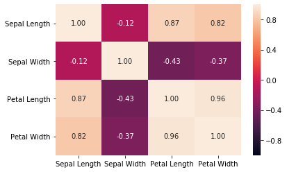
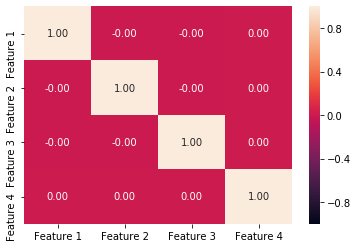
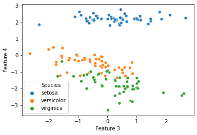
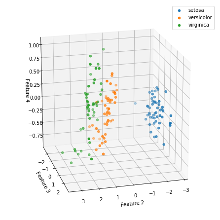

import seaborn as sns
from sklearn import datasets
import pandas as pdiris = datasets.load_iris()target_names = iris.target_namesX = pd.DataFrame(iris.data)X.columns = ['Sepal Length', 'Sepal Width', 'Petal Length', 'Petal Width']for name in X.columns:
X[name] = (X[name]-X[name].mean())/X[name].std()sns.heatmap(X.corr(), vmin=-1, vmax=1, annot=True, fmt='2.2f')<matplotlib.axes._subplots.AxesSubplot at 0x7f026c877780>
import numpy as np# calculate the Covariance matrix
Q = X.cov().to_numpy()# find the eigenvalue and eigenvector of the Covariance matrix
D, V = np.linalg.eigh(Q) # print the results
np.set_printoptions(precision=2)
print('principal components:')principal components:for i in range(1, len(D)):
print('Feature %d : %2.3f'%(i, D[i]))Feature 1 : 0.147
Feature 2 : 0.914
Feature 3 : 2.918# perform the linear transformation
X_new = X.dot(V)# define the columns names to the X_new
X_new.columns = ["Feature %d"%i for i in range(1,5)]# The correlation between different features disappear!
sns.heatmap(X_new.corr(), vmin=-1, vmax=1, annot=True, fmt='2.2f')<matplotlib.axes._subplots.AxesSubplot at 0x7f023c032940>
# truncation: dimensional reduction
X_reduced = X.copy()V_trun = V[:,2:4]X_reduced = X_reduced.dot(V_trun)X_reduced['Species'] = iris.targetX_reduced.columns = ['Feature 3', 'Feature 4', 'Species']for i, t in enumerate(target_names):
X_reduced['Species'].replace(i, t, inplace=True)sns.scatterplot(data=X_reduced, x='Feature 3', y='Feature 4', hue='Species')<matplotlib.axes._subplots.AxesSubplot at 0x7f023bf7f400>
from sklearn.decomposition import PCAX3 = X.to_numpy()
pca = PCA(n_components=3, random_state=0)
X3_reduced = pca.fit(X3).transform(X3)
X3_reduced = pd.DataFrame(X3_reduced)
X3_reduced['species'] = iris.target# plot the results in 3D scatter plotfrom mpl_toolkits.mplot3d import Axes3D
import matplotlib.pyplot as pltfig = plt.figure(figsize=(6,6))
ax = Axes3D(fig)
for i in range(3):
idx = X3_reduced['species']==i
ax.scatter(X3_reduced[0][idx], X3_reduced[1][idx], X3_reduced[2][idx], label=target_names[i])
plt.legend()
ax.view_init(20,75)
plt.xlabel('Feature 2')
plt.ylabel('Feature 3')
ax.set_zlabel('Feature 4')Text(0.5, 0, 'Feature 4')